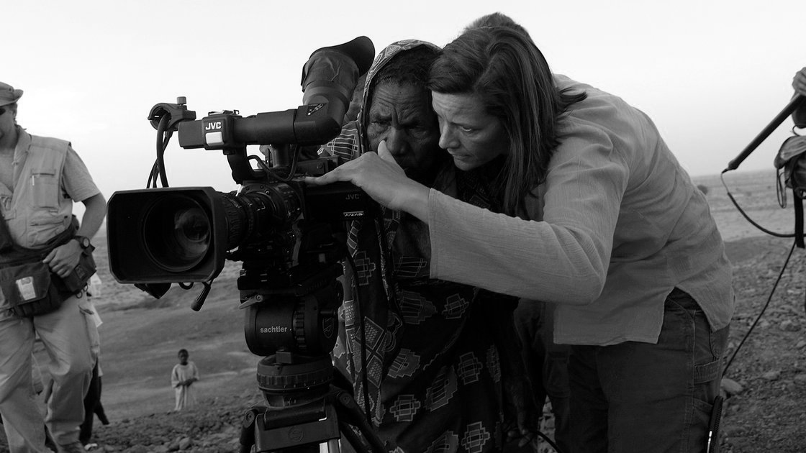

Historias que importan, contadas con el corazón.
Contamos historias reales, de comunidades, causas y personas que han sido silenciadas o invisibilizadas. Nuestros documentales son el resultado de un trabajo cercano, respetuoso y profundamente honesto con quienes confían en nosotros para narrar su verdad.
